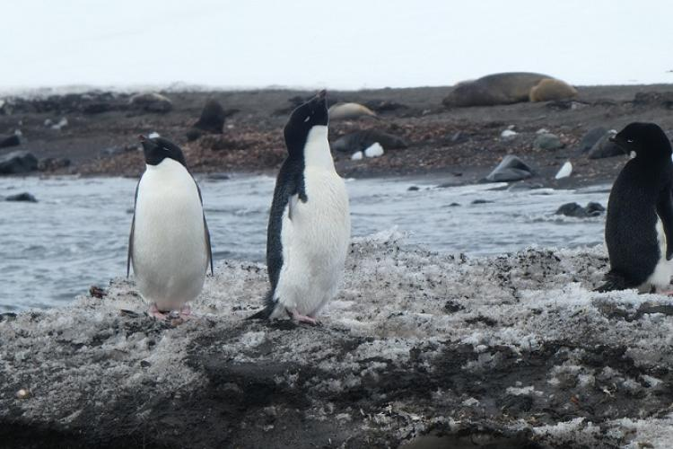
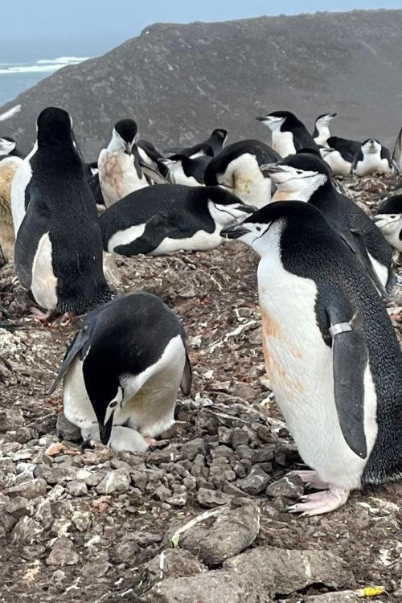
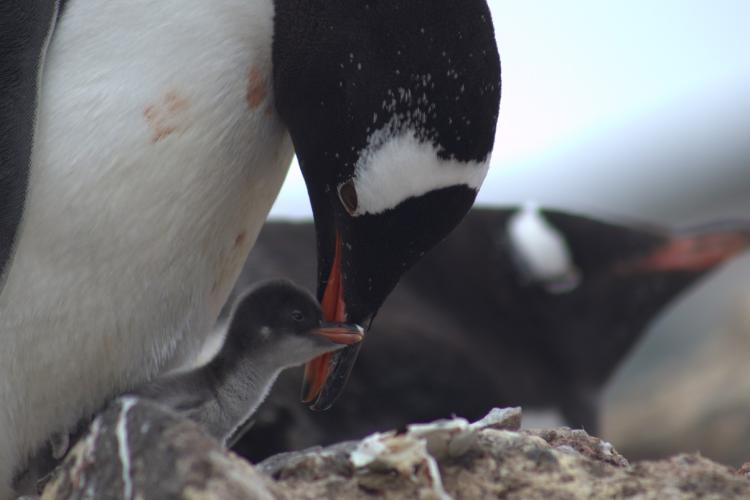

Palmer penguin measurements
Field researchers measured 344 adult penguins on three islands from 2007 to 2009. Compare the species, then inspect the observations behind each summary.



Species photographs by NOAA Fisheries at Cape Shirreff, 2024–25. Field photographs
Find the middle measurement
Choose three records with measurements to compare.